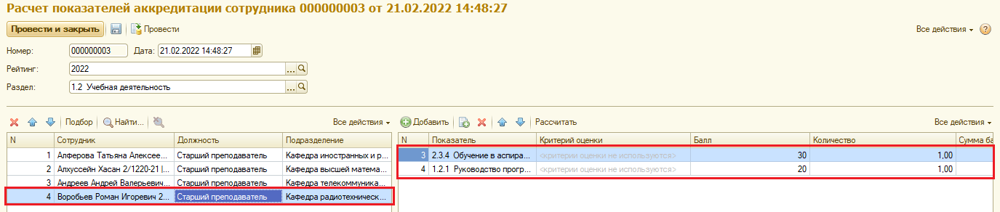
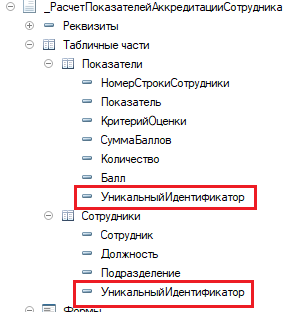

1.2.5.5. Связанные табличные части

---------------------------
При добавлении строки Сотрудники заполняем поле УникальныйИдентификатор
&НаКлиенте
Процедура СотрудникиОбработкаВыбора(Элемент, ВыбранноеЗначение, СтандартнаяОбработка)
Если ВыбранноеЗначение <> Неопределено Тогда
ИнформацияПоСотрудникам = ПредставитьВВидеСтруктуры(ВыбранноеЗначение.АдресСтудентовВХранилище);
Если ИнформацияПоСотрудникам = Неопределено Тогда
Сообщить("Для подбора используйте только вкладку ''Сотрудники''");
Возврат;
КонецЕсли;
Если ИнформацияПоСотрудникам.Количество() > 0 Тогда
Для Каждого ТекСтруктура Из ИнформацияПоСотрудникам Цикл
НоваяСтрокаСотрудника = Объект.Сотрудники.Добавить();
НоваяСтрокаСотрудника.Сотрудник = ТекСтруктура.Сотрудник;
НоваяСтрокаСотрудника.Должность = ТекСтруктура.Должность;
НоваяСтрокаСотрудника.Подразделение = ТекСтруктура.Кафедра;
НоваяСтрокаСотрудника.УникальныйИдентификатор = Новый УникальныйИдентификатор();
КонецЦикла;
КонецЕсли;
//ОбновитьКоличествоВСтатистике();
Модифицированность = Истина;
КонецЕсли;
КонецПроцедуры
При добавлении строки Показатели заполняем поле УникальныйИдентификатор текущим значением аналогичного поля Сотрудники
&НаКлиенте
Процедура ПоказателиПриНачалеРедактирования(Элемент, НоваяСтрока, Копирование)
Если НоваяСтрока Тогда
Элемент.ТекущиеДанные.УникальныйИдентификатор = Элементы.Сотрудники.ТекущиеДанные.УникальныйИдентификатор;
КонецЕсли;
КонецПроцедуры
---------------------------------------
При удалении строки Сотрудники удаляем все строки в Показатели
&НаКлиенте
Процедура СотрудникиПередУдалением(Элемент, Отказ)
ПараметрыОтбора = Новый Структура("УникальныйИдентификатор", Элемент.ТекущиеДанные.УникальныйИдентификатор);
НайденныеСтрокиПоказатели = Объект.Показатели.НайтиСтроки(ПараметрыОтбора);
Для каждого ТекСтрока Из НайденныеСтрокиПоказатели Цикл
Объект.Показатели.Удалить(ТекСтрока);
КонецЦикла;
КонецПроцедуры
---------------------------------------
При выборе строки Сотрудники в Показатели делаем отбор по УникальныйИдентификатор, а также рассчитываем сумму по строкам, которые вошли в отбор.
&НаКлиенте
Процедура СотрудникиПриАктивизацииСтроки(Элемент)
УстановитьОтборСтрокПоказатели();
ИтогПоСуммеБаллов = 0;
Для Каждого ТекСтрока Из Объект.Показатели Цикл
Если Элементы.Показатели.ПроверитьСтроку(ТекСтрока.ПолучитьИдентификатор()) Тогда
ИтогПоСуммеБаллов = ИтогПоСуммеБаллов + ТекСтрока.СуммаБаллов;
КонецЕсли;
КонецЦикла;
КонецПроцедуры
&НаКлиенте
Процедура УстановитьОтборСтрокПоказатели()
Если Элементы.Сотрудники.ТекущиеДанные <> Неопределено Тогда
Элементы.Показатели.ОтборСтрок = Новый ФиксированнаяСтруктура("УникальныйИдентификатор", Элементы.Сотрудники.ТекущиеДанные.УникальныйИдентификатор);
КонецЕсли;
КонецПроцедуры
----------------------------------------
При изменении Показатели пересчитываем поля текущей строки
&НаКлиенте
Процедура ПоказателиПриИзменении(Элемент)
Если Элемент.ТекущиеДанные <> Неопределено Тогда
ИдентификаторТекСтроки = Элемент.ТекущиеДанные.ПолучитьИдентификатор();
ПоказателиПриИзмененииНаСервере(ИдентификаторТекСтроки);
КонецЕсли;
//УстановитьОтборСтрокПоказатели();
КонецПроцедуры
Процедура ПоказателиПриИзмененииНаСервере(ИдентификаторТекСтроки)
ЗаполнитьРеквизитыВСтрокеПоПоказателю(Объект.Показатели.НайтиПоИдентификатору(ИдентификаторТекСтроки));
КонецПроцедуры
&НаСервере
Процедура ЗаполнитьРеквизитыВСтрокеПоПоказателю(ТекДанные)
// Для Каждого ТекСтрока Из Объект.Показатели Цикл
ТекДанные.ИспользуютсяКритерииОценки = ТекДанные.Показатель.ИспользуютсяКритерииОценки;
Если Не ТекДанные.ИспользуютсяКритерииОценки И Не ТекДанные.Показатель.ПометкаУдаления Тогда
ТекДанные.Балл = ТекДанные.Показатель.НормативноеЗначение;
ИначеЕсли
ТекДанные.ИспользуютсяКритерииОценки И Не ТекДанные.КритерийОценки.ПометкаУдаления Тогда
ТекДанные.Балл = ТекДанные.КритерийОценки.НормативноеЗначение;
Иначе ТекДанные.Балл = 0;
КонецЕсли;
ТекДанные.СуммаБаллов = ТекДанные.Количество * ТекДанные.Балл;
// КонецЦикла;
КонецПроцедуры
|